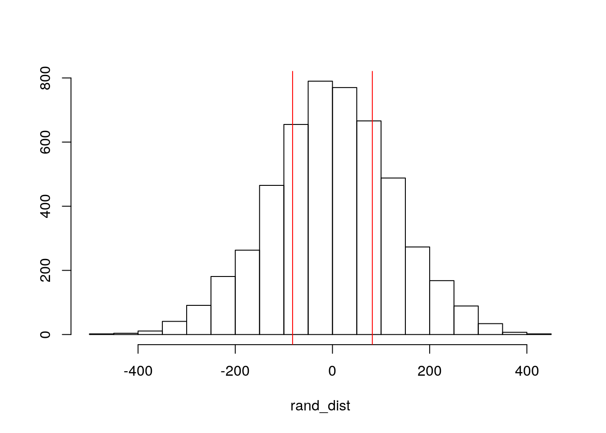

library(tidyverse)## ── Attaching packages ─────────────────────────────────────── tidyverse 1.3.0 ──## ✓ ggplot2 3.3.3 ✓ purrr 0.3.4
## ✓ tibble 3.0.4 ✓ dplyr 1.0.2
## ✓ tidyr 1.1.2 ✓ stringr 1.4.0
## ✓ readr 1.4.0 ✓ forcats 0.5.0## ── Conflicts ────────────────────────────────────────── tidyverse_conflicts() ──
## x dplyr::filter() masks stats::filter()
## x dplyr::lag() masks stats::lag()data <- read.csv("data101.csv")
data <- data %>% select(-doc_iufd) %>% na.omit()
data <- data %>% select(-uri)The dataset looked at pregnancy outcomes in delivery facilities as a part of the East Africa Preterm Birth Initiative that looks to determine opportunities for preinatal mortality prevention. The dataset obtained data at 23 facilities over 18 months, but I only incuded data after omiting any NA values. In particular, I am looking at the varaibles: ga, apgar_1, sex, baby_discharge_status, c_mode_of_delivery, c_mothers_age, and c_birth_weight_g2. All variables had 100 observations. “ga” measures gestational age in weeks. “apgar_1” measures its APGAR score at 1 minutes ranging from 1 to 10. This was repeated again at 5 minutes. “Sex” is the sex of which is either male of female. “baby_discharge_status” describes the status of the baby at discharge. “c_mode_of_delivery” is the mode of the delivery for the baby. “c_mothers_age” is the mother’s age upon giving birth (years). “c_brith_weight_g2” is the baby’s birth weight in grams. The removed variables pertain to record identifiers to each individual mother. Hopefully, the remaining variables are fairly self-explanatory by its title.
man2 <- manova(cbind(ga,c_mothers_age, c_birth_weight_g2,apgar_1,apgar_5)~c_birth_outcome, data=data)
summary(man2)## Df Pillai approx F num Df den Df Pr(>F)
## c_birth_outcome 1 0.67363 38.803 5 94 < 2.2e-16 ***
## Residuals 98
## ---
## Signif. codes: 0 '***' 0.001 '**' 0.01 '*' 0.05 '.' 0.1 ' ' 1summary.aov(man2)## Response ga :
## Df Sum Sq Mean Sq F value Pr(>F)
## c_birth_outcome 1 2.97 2.9703 0.7259 0.3963
## Residuals 98 400.99 4.0917
##
## Response c_mothers_age :
## Df Sum Sq Mean Sq F value Pr(>F)
## c_birth_outcome 1 12.41 12.412 0.3864 0.5356
## Residuals 98 3147.70 32.119
##
## Response c_birth_weight_g2 :
## Df Sum Sq Mean Sq F value Pr(>F)
## c_birth_outcome 1 64429 64429 0.2173 0.6421
## Residuals 98 29053471 296464
##
## Response apgar_1 :
## Df Sum Sq Mean Sq F value Pr(>F)
## c_birth_outcome 1 171.66 171.657 120.94 < 2.2e-16 ***
## Residuals 98 139.09 1.419
## ---
## Signif. codes: 0 '***' 0.001 '**' 0.01 '*' 0.05 '.' 0.1 ' ' 1
##
## Response apgar_5 :
## Df Sum Sq Mean Sq F value Pr(>F)
## c_birth_outcome 1 231.94 231.945 171.56 < 2.2e-16 ***
## Residuals 98 132.50 1.352
## ---
## Signif. codes: 0 '***' 0.001 '**' 0.01 '*' 0.05 '.' 0.1 ' ' 1pairwise.t.test(data$apgar_1, data$c_birth_outcome, p.adj="none")##
## Pairwise comparisons using t tests with pooled SD
##
## data: data$apgar_1 and data$c_birth_outcome
##
## Born_Alive
## Still_Birth <2e-16
##
## P value adjustment method: nonepairwise.t.test(data$apgar_5, data$c_birth_outcome, p.adj="none")##
## Pairwise comparisons using t tests with pooled SD
##
## data: data$apgar_5 and data$c_birth_outcome
##
## Born_Alive
## Still_Birth <2e-16
##
## P value adjustment method: none1-(0.95^8)## [1] 0.33657960.06/8## [1] 0.0075ggplot(data, aes(x = apgar_1, y = apgar_5)) + geom_point(alpha = .5) + geom_density_2d(h=2) + coord_fixed() + facet_wrap(~c_birth_outcome)library(rstatix)##
## Attaching package: 'rstatix'## The following object is masked from 'package:stats':
##
## filtergroup <- data$c_birth_outcome
DVs <- data %>% select(ga,c_mothers_age,c_birth_weight_g2,apgar_1,apgar_5)
box_m(DVs, group)## Warning in box_m(DVs, group): there are one or more levels with less
## observations than variables!## # A tibble: 1 x 4
## statistic p.value parameter method
## <dbl> <dbl> <dbl> <chr>
## 1 Inf 0 15 Box's M-test for Homogeneity of Covariance Matric…lapply(split(DVs,group), cov)## $Born_Alive
## ga c_mothers_age c_birth_weight_g2 apgar_1
## ga 4.1561426 -0.5076246 413.7027 0.5800043
## c_mothers_age -0.5076246 30.0940722 668.7285 0.6073883
## c_birth_weight_g2 413.7027491 668.7285223 300695.8763 218.5352234
## apgar_1 0.5800043 0.6073883 218.5352 1.4488832
## apgar_5 0.5200816 0.6757947 219.8776 1.2891967
## apgar_5
## ga 0.5200816
## c_mothers_age 0.6757947
## c_birth_weight_g2 219.8775773
## apgar_1 1.2891967
## apgar_5 1.3801546
##
## $Still_Birth
## ga c_mothers_age c_birth_weight_g2 apgar_1 apgar_5
## ga 1 -11.0000 300.000 0 0
## c_mothers_age -11 129.3333 -3133.333 0 0
## c_birth_weight_g2 300 -3133.3333 93333.333 0 0
## apgar_1 0 0.0000 0.000 0 0
## apgar_5 0 0.0000 0.000 0 0A MONOVA test was conducted to determine the effects of birth outcome(Born alive or still birth) on various numeric, dependent varaibles (ga, c_mothers_age, c_birth_weight_g2, apar_1, apgar_5). Significant differences were found among the two birth outcomes for at least one of the dependent variables. Performing an one-way ANOVA for each variable, “apgar_1” and “apgar_5” were significant meaning at least one birth outcome differs. There were a total of 8 tests: 1 MANOVA, 5 ANOVAS, and 2 unique t-tests. The probability of at least one Type I error is 33.658%. The bonferrroni correction adjusted the significance level to 0.0075. Even after using the conversative alpha value, the post-hoc t tests are still significant. The post-hoc t-tests show that “born alive” versus “still birth” groups significantly differed from each other in terms of “apgar_1” and “apgar_5” value after adjusting for multiple comparisons. (p<0.0075). The MANOVA assumptions were likely not met. The dataset may not be completely random as the original dataset had over 60,000 observations and I only a few hundred rows that was further reduced to those without any N/A values. From the ggplot it is clear from the two significant variables apgar_1 and apgar_5 that there DVs do not have multivariate normality because the dataset distribution do not look similar between the two dependent variables. The test of homogeneity provides a p-value of zero, so one can assume there was no relative homogeneity.
data %>% group_by(c_mode_of_delivery) %>%
summarize(means=mean(c_birth_weight_g2)) %>% summarize('mean_diff'=diff(means))## `summarise()` ungrouping output (override with `.groups` argument)## # A tibble: 1 x 1
## mean_diff
## <dbl>
## 1 82.0rand_dist<-vector()
for(i in 1:5000){
new<-data.frame(time=sample(data$c_birth_weight_g2),condition=data$c_mode_of_delivery)
rand_dist[i]<-mean(new[new$condition=="Caesarean_Section",]$time)-
mean(new[new$condition=="Vaginal_Delivery",]$time)
}
{hist(rand_dist,main="",ylab=""); abline(v = c(-82.044, 82.044),col="red")}
mean(rand_dist>82.044 | rand_dist < -82.044)## [1] 0.5168The two variables are the categorical mode of delivery (cesarean or vaginal) and at baby’s birthweight in grams (“c_birth_weight_g2”). A randomization test was performed because potentially because the samples were too small to meet any assumptions. A mean difference test statistic was recorded to know of association between the categorical variable vs. numeric variable. The null hypothesis is that the mean birth weight is the same for cesarean vs. vaginal deliveries. The alternative hypothesis is that the mean birth weight is difference for cesarean vs. vaginal deliveries. Babies from a vaginal delivery had a birth weight 82.044 grams greater than babies delivered from a cesarean on average. The two-tailed p-value of 0.5318 tells us that we fail to reject the null hypothesis and that there is the mean birth weight is the same for both modes of delivery. The histogram shows are significant amount of mean differences falls beyond the observed mean difference (82.044 grams).
data$c_apgar_1 <- data$apgar_1 - mean(data$apgar_1)
fit <- lm(c_birth_weight_g2~c_apgar_1*c_mode_of_delivery,data=data)
summary(fit)##
## Call:
## lm(formula = c_birth_weight_g2 ~ c_apgar_1 * c_mode_of_delivery,
## data = data)
##
## Residuals:
## Min 1Q Median 3Q Max
## -1547.83 -253.60 10.41 389.31 1268.84
##
## Coefficients:
## Estimate Std. Error t value
## (Intercept) 3130.33 114.85 27.256
## c_apgar_1 183.33 75.90 2.415
## c_mode_of_deliveryVaginal_Delivery -8.13 129.62 -0.063
## c_apgar_1:c_mode_of_deliveryVaginal_Delivery -126.24 82.70 -1.527
## Pr(>|t|)
## (Intercept) <2e-16 ***
## c_apgar_1 0.0176 *
## c_mode_of_deliveryVaginal_Delivery 0.9501
## c_apgar_1:c_mode_of_deliveryVaginal_Delivery 0.1302
## ---
## Signif. codes: 0 '***' 0.001 '**' 0.01 '*' 0.05 '.' 0.1 ' ' 1
##
## Residual standard error: 525.9 on 96 degrees of freedom
## Multiple R-squared: 0.08824, Adjusted R-squared: 0.05974
## F-statistic: 3.097 on 3 and 96 DF, p-value: 0.03046data %>% ggplot(aes(c_apgar_1,c_birth_weight_g2, color = c_mode_of_delivery)) + geom_smooth(method="lm")## `geom_smooth()` using formula 'y ~ x'summary(fit)$r.sq## [1] 0.08823745resids <-lm(c_birth_weight_g2~c_apgar_1*c_mode_of_delivery,data=data)$residuals
fitted <- lm(c_birth_weight_g2~c_apgar_1*c_mode_of_delivery,data=data)$fitted.values
resids<- fit$residuals
fitvals <- fit$fitted.values
ggplot()+geom_point(aes(fitvals,resids))+geom_hline(yintercept=0, color='red') ggplot()+geom_histogram(aes(resids),bins=20)library(sandwich)
library(lmtest)## Loading required package: zoo##
## Attaching package: 'zoo'## The following objects are masked from 'package:base':
##
## as.Date, as.Date.numericbptest(fit)##
## studentized Breusch-Pagan test
##
## data: fit
## BP = 1.7758, df = 3, p-value = 0.6202summary(fit)$coef ## Estimate Std. Error t value
## (Intercept) 3130.326087 114.84996 27.2557863
## c_apgar_1 183.333333 75.90400 2.4153316
## c_mode_of_deliveryVaginal_Delivery -8.130144 129.62064 -0.0627226
## c_apgar_1:c_mode_of_deliveryVaginal_Delivery -126.240345 82.69662 -1.5265477
## Pr(>|t|)
## (Intercept) 5.584350e-47
## c_apgar_1 1.761375e-02
## c_mode_of_deliveryVaginal_Delivery 9.501178e-01
## c_apgar_1:c_mode_of_deliveryVaginal_Delivery 1.301616e-01coeftest(fit, vcov = vcovHC(fit))##
## t test of coefficients:
##
## Estimate Std. Error t value
## (Intercept) 3130.3261 127.9610 24.4631
## c_apgar_1 183.3333 124.6633 1.4706
## c_mode_of_deliveryVaginal_Delivery -8.1301 140.7203 -0.0578
## c_apgar_1:c_mode_of_deliveryVaginal_Delivery -126.2403 128.6654 -0.9812
## Pr(>|t|)
## (Intercept) <2e-16 ***
## c_apgar_1 0.1447
## c_mode_of_deliveryVaginal_Delivery 0.9540
## c_apgar_1:c_mode_of_deliveryVaginal_Delivery 0.3290
## ---
## Signif. codes: 0 '***' 0.001 '**' 0.01 '*' 0.05 '.' 0.1 ' ' 1I asked the question does the effect of APGAR value at 1 minutes on birth weight differ by mode of delivery? I mean centered the APGAR values recorded at 1 minute, but it appears many of the varaibles were already mean centered based off of its name labeling (c_…). The mean/predicted birth weight by cesarean mode of delivery with average APGAR_1 value is 3130.33 grams. APGAR_1 values are significantly associated with birth weight: for every 1-unit increase in APGAR_1 value, the predicted birth weight goes up 183.33 grams. Babies from vaginal delivery with an average APGAR_1 value have a predicted birth weight that is 8.13 grams lower than babies from cesarean delivery with average APGAR_1 value. 0.651 of the variation in birth weight is explained by the regression lines of center APGAR_1 values. This partitions the total variation due to the regressions and the remaining due to error. The assumption of linearity from the residuals vs Fitted plot is confirmed due to a relatively, random pattern. The data also appears normally distributed in the histogram. The bp test fails to reject the null hypothesis that there is homoskedasticity (p>0.05). With the more robust standard errors, the p-value of the intercept is now significant which means there is a strong prediction that the birth weight is 3130.33 grams by a cesarean mode of delivery with average APGAR_1 value. Also, its t-test value dropped from 27.256 to 24.463.
#Rerun same regression model (with the interaction), but this time compute bootstrapped standard errors (either by resampling observations or residuals). Discuss any changes you observe in SEs and p-values using these SEs compared to the original SEs and the robust SEs)
fit <- lm(c_birth_weight_g2~c_apgar_1*c_mode_of_delivery,data=data)
samp_distn<-replicate(5000, {
boot_dat<-data[sample(nrow(data),replace=TRUE),]
fit<-lm(c_birth_weight_g2~c_apgar_1*c_mode_of_delivery,data=boot_dat)
coef(fit)
})
summary(fit)$coef #normal-theory SEs## Estimate Std. Error t value
## (Intercept) 3130.326087 114.84996 27.2557863
## c_apgar_1 183.333333 75.90400 2.4153316
## c_mode_of_deliveryVaginal_Delivery -8.130144 129.62064 -0.0627226
## c_apgar_1:c_mode_of_deliveryVaginal_Delivery -126.240345 82.69662 -1.5265477
## Pr(>|t|)
## (Intercept) 5.584350e-47
## c_apgar_1 1.761375e-02
## c_mode_of_deliveryVaginal_Delivery 9.501178e-01
## c_apgar_1:c_mode_of_deliveryVaginal_Delivery 1.301616e-01coeftest(fit, vcov = vcovHC(fit)) #robust SEs##
## t test of coefficients:
##
## Estimate Std. Error t value
## (Intercept) 3130.3261 127.9610 24.4631
## c_apgar_1 183.3333 124.6633 1.4706
## c_mode_of_deliveryVaginal_Delivery -8.1301 140.7203 -0.0578
## c_apgar_1:c_mode_of_deliveryVaginal_Delivery -126.2403 128.6654 -0.9812
## Pr(>|t|)
## (Intercept) <2e-16 ***
## c_apgar_1 0.1447
## c_mode_of_deliveryVaginal_Delivery 0.9540
## c_apgar_1:c_mode_of_deliveryVaginal_Delivery 0.3290
## ---
## Signif. codes: 0 '***' 0.001 '**' 0.01 '*' 0.05 '.' 0.1 ' ' 1samp_distn %>% t %>% as.data.frame %>% summarize_all(sd) #bootstrapped SEs## (Intercept) c_apgar_1 c_mode_of_deliveryVaginal_Delivery
## 1 129.0148 97.77854 142.2787
## c_apgar_1:c_mode_of_deliveryVaginal_Delivery
## 1 106.2765When compared with original SEs and robust SEs, the SEs increased for the intercept. The boostrapped SE for APGAR_1 values are greater than the original SEs but less than the robust SEs. The bootstrapped SE for mode of delivery (vaginal delivery=1) is greater than the other two SEs. THe bootstrapped SE for the interaction variable is greater than the original SE but less than the robust SE.
#Fit a logistic regression model predicting a binary variable (if you don't have one, make/get one) from at least two explanatory variables (interaction not necessary).
# - Interpret coefficient estimates in context (10)
# - Report a confusion matrix for your logistic regression (5)
# - Compute and discuss the Accuracy, Sensitivity (TPR), Specificity (TNR), Precision (PPV), and AUC of your model (5)
# - Using ggplot, make a density plot of the log-odds (logit) colored/grouped by your binary outcome variable (5)
# - Generate an ROC curve (plot) and calculate AUC (either manually or with a package); interpret (5)
data <- data %>% mutate(y=ifelse(c_mode_of_delivery=="Caesarean_Section",1,0))
fit2 <-glm(y~sex+c_mothers_age,family="binomial",data=data)
coeftest(fit2)##
## z test of coefficients:
##
## Estimate Std. Error z value Pr(>|z|)
## (Intercept) -2.048673 1.116515 -1.8349 0.06652 .
## sexMale 0.129205 0.488903 0.2643 0.79157
## c_mothers_age 0.031047 0.041315 0.7515 0.45237
## ---
## Signif. codes: 0 '***' 0.001 '**' 0.01 '*' 0.05 '.' 0.1 ' ' 1exp(0.129205)## [1] 1.137923exp(0.031047)## [1] 1.031534tdat<- data %>% mutate(prob=predict(fit2, type="response"), prediction=ifelse(prob>.5,1,0))
classify<-tdat%>%transmute(prob,prediction,truth=y)
table(prediction=classify$prediction,truth=classify$truth)%>%addmargins()## truth
## prediction 0 1 Sum
## 0 77 23 100
## Sum 77 23 100(77+0)/100 #accuracy## [1] 0.77(0)/100 #sensitivity## [1] 0(77)/77 #specificity## [1] 1(0/0) #precision## [1] NaNdata$logit<- predict(fit2,type="link")
data%>%ggplot()+geom_density(aes(logit,color=y,fill=y), alpha=.4) +
theme(legend.position=c(.85,.85))+ xlab("logit (log-odds)")+
geom_rug(aes(logit,color=y))library(plotROC)
tdat1 <- data %>% mutate(prob=predict(fit2,type="response"), prediction=ifelse(prob>0.5,1,0))
classify1 <- tdat1 %>% transmute(prob,prediction,truth=y)
ROCplot2.1<-ggplot(classify1)+geom_roc(aes(d=truth,m=prob), n.cuts=0)+
geom_segment(aes(x=0,xend=1,y=0,yend=1),lty=2)
ROCplot2.1calc_auc(ROCplot2.1)## PANEL group AUC
## 1 1 -1 0.5474308When looking at the coefficient estimates, when controlling for the mother’s age, male and female clumps of mode of delivery are not significantly different. The odds of a cesarean section for male babies are 1.138 times odds than females babies. Controlling for the baby’s gender, for every one unit increase in the mother’s age, the odds of a cesarean change by a factor of 1.032. The confusion matrix shows that shows a accuracy of 0.77 or the proportion of correctly identified classified mode of delivery. Sensitivity tells us that there a zero proportion of cesarean deliveries were correctly identified. Specificity tells us that there was 1 proportion of vaginal birth correctly classified. The precicsion tells us that 0 proportion classified as a cesarean birth that actually was. The calculated AUC from the ROC plot was determined to be 0.547. This means the model poorly predicts that as the probability that a randomly selected mother with a cesarean delivery has a higher probability than a randomly selected person with a natural birth.
library(knitr)
opts_chunk$set(fig.align="center", fig.height=5, message=FALSE, warning=FALSE, fig.width=8, tidy.opts=list(width.cutoff=60),tidy=TRUE)
class_diag <- function(probs,truth){
if(is.character(truth)==TRUE) truth<-as.factor(truth)
if(is.numeric(truth)==FALSE & is.logical(truth)==FALSE) truth<-as.numeric(truth)-1
tab<-table(factor(probs>.5,levels=c("FALSE","TRUE")),factor(truth, levels=c(0,1)))
acc=sum(diag(tab))/sum(tab)
sens=tab[2,2]/colSums(tab)[2]
spec=tab[1,1]/colSums(tab)[1]
ppv=tab[2,2]/rowSums(tab)[2]
#CALCULATE EXACT AUC
ord<-order(probs, decreasing=TRUE)
probs <- probs[ord]; truth <- truth[ord]
TPR=cumsum(truth)/max(1,sum(truth))
FPR=cumsum(!truth)/max(1,sum(!truth))
dup <-c(probs[-1]>=probs[-length(probs)], FALSE)
TPR <-c(0,TPR[!dup],1); FPR<-c(0,FPR[!dup],1)
n <- length(TPR)
auc <- sum( ((TPR[-1]+TPR[-n])/2) * (FPR[-1]-FPR[-n]) )
data.frame(acc,sens,spec,ppv,auc)
}
data3 <- data %>% mutate(y=ifelse(c_mode_of_delivery=="Caesarean_Section",1,0))
fit3 <-glm(y~quarter+c_baby_status+c_birth_weight_g2+referral_in+ga+apgar_1+apgar_5+sex+c_mothers_age+c_mother_status,family="binomial",data=data3)## Warning: glm.fit: fitted probabilities numerically 0 or 1 occurredcoeftest(fit3)##
## z test of coefficients:
##
## Estimate Std. Error
## (Intercept) -2.4097e+01 3.9562e+03
## quarterQ2 -2.2281e+00 1.5543e+00
## quarterQ4 1.4683e+01 2.5406e+03
## c_baby_statusImmediate_Neonatal_Death 2.3204e+01 3.9562e+03
## c_baby_statusLive_Baby 2.5814e+01 3.9562e+03
## c_baby_statusMacerated_Still_Birth -1.2568e+01 5.3442e+03
## c_birth_weight_g2 -2.5181e-04 6.4992e-04
## referral_in -6.6906e-01 1.2340e+00
## ga 1.4942e-01 1.7343e-01
## apgar_1 -9.1114e-01 5.1989e-01
## apgar_5 4.4473e-02 5.4294e-01
## sexMale 5.1799e-02 5.8663e-01
## c_mothers_age 3.7958e-02 5.1517e-02
## c_mother_statusRan_away_or_Left_Before_Being_Discharged -1.7656e+01 2.4299e+03
## z value Pr(>|z|)
## (Intercept) -0.0061 0.99514
## quarterQ2 -1.4336 0.15170
## quarterQ4 0.0058 0.99539
## c_baby_statusImmediate_Neonatal_Death 0.0059 0.99532
## c_baby_statusLive_Baby 0.0065 0.99479
## c_baby_statusMacerated_Still_Birth -0.0024 0.99812
## c_birth_weight_g2 -0.3874 0.69843
## referral_in -0.5422 0.58768
## ga 0.8616 0.38891
## apgar_1 -1.7526 0.07968 .
## apgar_5 0.0819 0.93472
## sexMale 0.0883 0.92964
## c_mothers_age 0.7368 0.46124
## c_mother_statusRan_away_or_Left_Before_Being_Discharged -0.0073 0.99420
## ---
## Signif. codes: 0 '***' 0.001 '**' 0.01 '*' 0.05 '.' 0.1 ' ' 1prob<-predict(fit3,type="response")
pred<-ifelse(prob>0.5,1,0)
table(prediction=pred, truth=data3$y) %>% addmargins## truth
## prediction 0 1 Sum
## 0 73 17 90
## 1 4 6 10
## Sum 77 23 100(73+6)/100 #accuracy## [1] 0.796/23 #sensitivity## [1] 0.260869673/77 #specificity## [1] 0.948051972/90 #precision## [1] 0.8library(plotROC)
tdat2 <- data3 %>% mutate(prob=predict(fit3,type="response"), prediction=ifelse(prob>0.5,1,0))
classify2.1 <- tdat2 %>% transmute(prob,prediction,truth=y)
ROCplot3.1<-ggplot(classify2.1)+geom_roc(aes(d=truth,m=prob), n.cuts=0)+
geom_segment(aes(x=0,xend=1,y=0,yend=1),lty=2)
ROCplot3.1calc_auc(ROCplot3.1)## PANEL group AUC
## 1 1 -1 0.7797854set.seed(1234)
k=10
data1c <- data3 %>% sample_frac
folds <- ntile(1:nrow(data1c),n=10)
diags<-NULL
for(i in 1:k){
train <- data1c[folds!=i,]
test <- data1c[folds==i,]
truth <- test$y
fit1c <-glm(y~quarter+c_baby_status+c_birth_weight_g2+referral_in+ga+apgar_1+apgar_5+sex+c_mothers_age+c_mother_status,family="binomial",data=data3)
probs1c <- predict(fit1c,newdata=test, type = "response")
diags<- rbind(diags,class_diag(probs1c,truth))
}## Warning: glm.fit: fitted probabilities numerically 0 or 1 occurred
## Warning: glm.fit: fitted probabilities numerically 0 or 1 occurred
## Warning: glm.fit: fitted probabilities numerically 0 or 1 occurred
## Warning: glm.fit: fitted probabilities numerically 0 or 1 occurred
## Warning: glm.fit: fitted probabilities numerically 0 or 1 occurred
## Warning: glm.fit: fitted probabilities numerically 0 or 1 occurred
## Warning: glm.fit: fitted probabilities numerically 0 or 1 occurred
## Warning: glm.fit: fitted probabilities numerically 0 or 1 occurred
## Warning: glm.fit: fitted probabilities numerically 0 or 1 occurred
## Warning: glm.fit: fitted probabilities numerically 0 or 1 occurredsummarize_all(diags,mean)## acc sens spec ppv auc
## 1 0.79 0.3 0.9496032 NaN 0.7508929I performed a logistic regression of the same binary response variable from the rest of the variables except ones the appeared only related to administrated labeling. Also some dependent variables did have enough variation with only 1 data value. The accuracy value states there was a 79% of all correctly classified mode of delivery. The sensitivity value states there is a 0.261 probability of detecting a caserian delivery if they really had one. The specificity value states there is a 0.948 probability of a natural birth for those that actually had one. The precision value states 0.8 proportion of those classified with a caserian birth as actually having one. The AUC value is better new with a value of 0.780 which means a good probability that a randomly selected person with a cesarean birth has a higher predicted probability than a randomly seelcted person with a natural birth.
For the 10-fold CV, the Accuracy, Sensitivity, Specificity, Precision, and AUC are the following: 0.79,0.3,0.94, and 0.75. This AUC value is more or less the same but a little lower in value compared to the AUC value of the in-sample classification. Both the in and out-of-sample have similar prediction ability. This also mean there is no sign of overfitting.
library(glmnet)
y <- as.matrix(data3$y)
x <- model.matrix(y ~ quarter + c_baby_status + c_birth_weight_g2 +
referral_in + ga + apgar_1 + apgar_5 + sex + c_mothers_age +
c_mother_status, data = data3)[, -1]
x <- scale(x)
cv <- cv.glmnet(x, y, family = "binomial")
lasso <- glmnet(x, y, family = "binomial", lambda = cv$lambda.1se)
coef(lasso)## 14 x 1 sparse Matrix of class "dgCMatrix"
## s0
## (Intercept) -1.208311e+00
## quarterQ2 .
## quarterQ4 .
## c_baby_statusImmediate_Neonatal_Death .
## c_baby_statusLive_Baby .
## c_baby_statusMacerated_Still_Birth .
## c_birth_weight_g2 .
## referral_in .
## ga .
## apgar_1 -3.937804e-17
## apgar_5 .
## sexMale .
## c_mothers_age .
## c_mother_statusRan_away_or_Left_Before_Being_Discharged .set.seed(1234)
k = 10
data1d <- data3 %>% sample_frac
folds <- ntile(1:nrow(data1d), n = 10)
diags <- NULL
for (i in 1:k) {
train <- data1d[folds != i, ]
test <- data1d[folds == i, ]
truth <- test$y
fit1d <- glm(y ~ apgar_1, family = "binomial", data = data3)
probs1d <- predict(fit1d, newdata = test, type = "response")
diags <- rbind(diags, class_diag(probs1d, truth))
}
summarize_all(diags, mean)## acc sens spec ppv auc
## 1 0.77 0 1 NaN 0.653621For the Lasso test, the only variable that was retained was apgar_1 or the baby’s APGAR value 1 minutes after birth. This was the only the non-zero coefficient estimates that was determined to be the most predictive variable for mode of delivery. This models AUC value of 0.654 was the lowest as it dropped a value of 0.1 compared to the other AUC values approximately 0.7.